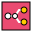
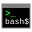
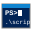

Sergio Andrés Aparicio Galvis es Desarrollador de Software Junior en formación con sólida base analítica y dominio en Python, R y JavaScript. Combina su trayectoria profesional en gestión de datos complejos con estudios actuales en Campuslands para ofrecer rigor lógico en desarrollo fullstack.
Cuenta con experiencia liderando proyectos técnicos y optimizando procesos mediante automatización y validación de información. Destaca por resolver problemas críticos mediante pensamiento estructurado y adaptación tecnológica rápida en entornos ágiles.
Su enfoque en calidad de código e integridad de datos lo posiciona como un activo valioso para equipos de ingeniería. Orientado a resultados, busca transformar requerimientos empresariales en soluciones de software escalables y eficientes.
Desarrollo intensivo de software fullstack aplicando metodologías ágiles (Scrum), arquitectura modular y buenas prácticas de código. Implementación de soluciones frontend (JavaScript Vanilla modular, HTML5, CSS3) y backend empresarial (Java 21 LTS, Spring Boot 4.1.1 con Spring Security 6 y JWT, PostgreSQL, Python OOP y automatizaciones con n8n). Desarrollo del proyecto insignia CAMPUSDESK (Plataforma de Mesa de Ayuda y Gestión de Tickets).
Gestión de bases de datos documentales y elaboración de informes técnicos estructurados. Implementación de planes de manejo mediante análisis de datos y coordinación con autoridades.
Liderazgo en equipo de investigación y gestión de bases de datos DwC utilizando lenguaje R. Estructuración, validación y limpieza de información taxonómica.
Dirección de planta de procesamiento y optimización de procesos operativos mediante monitoreo de variables críticas.
Análisis técnico de expedientes digitales y emisión de conceptos mediante evaluación de datos ambientales.
Enfoque en desarrollo fullstack, metodologías ágiles, estructuras de datos y algoritmos.
🇬🇧 Inglés Nivel B2 (Intermedio)
🇪 Español Nativo
Soluciones integrales de software desarrolladas aplicando metodologías ágiles, buenas prácticas de ingeniería y código limpio.
📱 Teléfono: 3203594850
📧 Correo: sergioandresapariciogalvis@outlook.com
📍 Ubicación: Piedecuesta, Santander

n8n
Bash
PowerShellSistema web integral diseñado para la recepción, priorización, asignación inteligente, seguimiento y resolución de incidencias y solicitudes técnicas en entornos institucionales o corporativos de campus.
Diseñado con una arquitectura desacoplada y sin estado (stateless), incorpora control de acceso granular basado en roles (RBAC) con permisos dinámicos, ciclo de vida estricto para contraseñas de primer acceso y una completa bitácora de auditoría histórica para trazabilidad operativa de eventos.
JAVA_HOME (java -version).psql --version).python -m http.server) o Node.js (npx serve).gradlew y gradlew.bat). El frontend está desarrollado en JavaScript Vanilla nativo, sin requerir npm install ni procesos de compilación o transpilación.
| Capa / Dimensión | Componente / Tecnología | Especificación y Función Clave |
|---|---|---|
| Backend (Spring Boot) |
Java 21 LTS |
Lenguaje base con funciones modernas y soporte LTS a largo plazo. |
Spring Boot 4.1.1 |
Framework principal de microservicios y APIs RESTful. | |
Spring Security 6 |
Filtros JWT simétricos HMAC256, stateless y autorización granular con @PreAuthorize. |
|
Spring Data JPA / Hibernate |
ORM con sincronización de esquema relacional automático (ddl-auto=update). |
|
Auth0 Java JWT (v4.3.0) & BCrypt |
Generación, firma simétrica y validación criptográfica de tokens y contraseñas. | |
MapStruct 1.5.5 & Project Lombok |
Mapeo de DTOs en tiempo de compilación y optimización de boilerplate. | |
Springdoc OpenAPI UI 3.1.1 |
Documentación interactiva de endpoints (Swagger UI). | |
| Frontend (Cliente Web) |
HTML5 Semántico & CSS3 |
Diseño adaptativo (responsive design), variables CSS y componentes modulares. |
JavaScript ES6+ Vanilla |
Módulos ES6 (import/export), Fetch API asíncrono y almacenamiento en sessionStorage. |
|
SVGs Optimizados |
Iconografía y logotipos vectoriales institucionales en alta fidelidad. | |
| Base de Datos | PostgreSQL 14+ |
Motor relacional principal para persistencia de producción y desarrollo. |
H2 Database & JUnit 5 |
Base en memoria para ejecución de suites de pruebas automatizadas y aisladas. |
CAMPUSDESK implementa un modelo de seguridad avanzado donde las facultades efectivas de una sesión son el resultado de la unión entre las facultades heredadas por el rol asignado y los permisos individuales concedidos directamente a la cuenta:
| Rol | Destinatarios | Funciones y Responsabilidades Operativas |
|---|---|---|
| ADMIN | Administradores de TI y Coordinadores | Acceso total al sistema: gestión de cuentas de usuario (alta, baja, bloqueo, reseteo de claves), asignación de roles y permisos, visualización de todos los tickets (TICKET_READ_ALL), asignación de técnicos a tickets (TICKET_ASSIGN) y acceso a métricas globales del dashboard (REPORT_READ). |
| TECHNICIAN | Personal de Soporte Técnico | Atención operativa de incidentes: consulta de tickets asignados (TICKET_READ_ASSIGNED), avance en la máquina de estados del ciclo de vida (TICKET_STATUS_UPDATE), publicación y lectura de comentarios técnicos (COMMENT_CREATE, COMMENT_READ) y auditoría de cambios de estado (HISTORY_READ). |
| USER | Requerientes (Estudiantes, Docentes, Empleados) | Autogestión de requerimientos: radicación de nuevos tickets (TICKET_CREATE), seguimiento de solicitudes propias (TICKET_READ_OWN, TICKET_UPDATE_OWN), confirmación o cierre de ticket resuelto (TICKET_CLOSE) e interacción mediante comentarios. |
Al arrancar el backend por primera vez, el servicio SecurityBootstrapService ejecuta:
USER_READ, TICKET_CREATE, TICKET_ASSIGN, etc.).ADMIN, TECHNICIAN, USER) y asocia sus permisos correspondientes.superadmin), listo para el primer acceso seguro.
El backend lee su configuración de spring-security-user-role-management/src/main/resources/application-dev.properties:
| Variable de Entorno | Descripción de Configuración | Valor Predeterminado en Dev |
|---|---|---|
DB_URL |
URL JDBC de conexión a PostgreSQL | jdbc:postgresql://localhost:5432/campusDESK |
DB_USERNAME |
Usuario para conectarse a PostgreSQL | admin |
DB_PASSWORD |
Contraseña del usuario de PostgreSQL | admin123 |
JWT_SECRET |
Clave secreta para la firma HMAC256 de los tokens JWT | 0fb5a8994cde705e2f45ca46... |
JWT_ISSUER |
Emisor registrado en el claim iss del token JWT | 0fb5a8994cde705e2f45ca46... |
JWT_EXPIRATION |
Vigencia del token (30m, 8h, 15d o formato ISO-8601) | 15d |
ADMIN_USERNAME |
Nombre de usuario del Super Administrador inicial | superadmin |
ADMIN_EMAIL |
Correo electrónico del Super Administrador inicial | superadmin@localhost |
ADMIN_PASSWORD |
Contraseña provisional del Super Administrador | SuperAdmin123! |
BOOTSTRAP_ADMIN_ENABLED |
Activa la creación de roles, permisos y usuario inicial | true |
1. Backend (Spring Boot en PowerShell):
2. Generación del JAR Autónomo de Producción:
http://localhost:8051
3. Frontend (Servidor Web Local):
http://localhost:8051/swagger-ui.htmlhttp://localhost:8051/v3/api-docsPOST /api/auth/login con superadmin / SuperAdmin123!.El cliente web cuenta con 12 módulos funcionales desarrollados en JavaScript ES6+ Vanilla con arquitectura desacoplada:
| Pantalla / Archivo | Rol Destinado | Funcionalidad Clave del Módulo |
|---|---|---|
index.html |
Público / Todos | Autenticación mediante usuario o correo, validación de estado de cuenta y modal forzoso de cambio de contraseña ante primer acceso. |
superadmin.html |
ADMIN | Visualización de indicadores clave, métricas de tickets en tiempo real y accesos rápidos a administración. |
userlist.html |
ADMIN | Catálogo de usuarios registrados, alta con contraseña temporal, bloqueo/desbloqueo, edición y restablecimiento de contraseña. |
newuser.html |
ADMIN | Formulario de registro y alta para nuevas cuentas de usuario con contraseña temporal generada. |
roleselector.html |
ADMIN | Asignación y revocación dinámica de roles y permisos individuales a usuarios. |
assignation.html |
ADMIN | Asignación de requerimientos a operadores técnicos según especialidad y carga de trabajo. |
technician.html |
TECHNICIAN | Listado de tickets asignados, transición de estados del ciclo de vida (EN_PROCESO, RESUELTO, etc.) y bitácora de comentarios. |
techguys.html |
ADMIN / TECHNICIAN | Perfiles de operadores técnicos y consulta de especialidades operativas. |
user.html |
USER | Panel de bienvenida para el usuario con accesos a reportar incidentes y ver el estado de sus casos. |
create-ticket.html |
USER / ADMIN | Formulario para reportar incidentes con título, descripción detallada, categoría y nivel de prioridad. |
my-tickets.html |
USER | Trazabilidad de tickets creados por el usuario con visualización de estado actual y respuestas de soporte. |
ticketlist.html |
ADMIN / TECHNICIAN | Tabla integral de tickets con filtros por estado, prioridad, solicitante y fecha de creación. |
Sergio.v95 Portfolio
Version 1.0 (Build 95)
A Windows 95 inspired portfolio showcasing the skills and experience of Sergio Andrés Aparicio Galvis.
© 2026 - Made with 💙 and nostalgia
Conéctate conmigo en LinkedIn para ver mi red profesional y recomendaciones.
Revisa mis repositorios y contribuciones en GitHub.
You're already here! This is my retro Windows 95 portfolio.